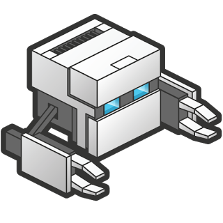

WebGL App to iOS in 5 minutes (LT)
5分でCordova WebGL アプリを作成
@Internet Initiative Japan
Created by Ally Ogilvie / @allyogilvie, June 10th 2014
プロジェクトの作成
Create a project

cordova create myApp
cd myApp
WizCanvasプラグインを追加
Add WizCanvas Plugin
cordova platform add ios
cordova plugin add https://github.com/Wizcorp/phonegap-plugin-wizCanvas
cordova build iOS
Webコードの追加
Add Our Web Code
Edit /www folder files...
// Build again
cordova build ios
実行
Run...